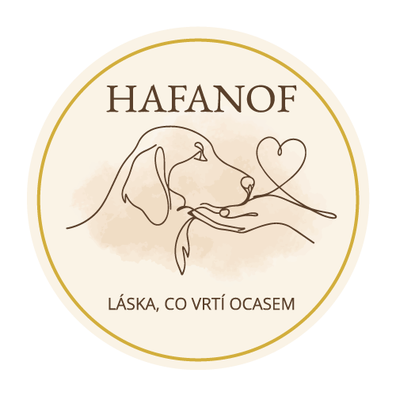

Koordinátorky, dočasné péče, patroni a adoptující v jednom prostředí. Postaveno na nové hnědo-krémové identitě, česky s přepínačem do angličtiny.
Informace o psech se dnes rozpadají mezi WhatsApp, papíry a hlavy dobrovolníků. Aplikace je drží na jednom místě a přizpůsobí se roli, ve které se člověk právě přihlásí.
Dočaska nevidí schvalování, patron nevidí zdravotní záznamy. Každá role má vlastní spodní pruh se čtyřmi místy, takže nikdo nehledá funkci, která pro něj není.
Dočaska není zaměstnanec. Aplikace se jí neptá na nic, co nemusí — ukáže dnešní péči, lék, který čeká na potvrzení, a dvě tlačítka.
Granule, rehabilitace, zimní pelíšek. Každé přání má svého psa, částku a stav. Platba kartou nebo Apple Pay proběhne v aplikaci, poděkování řekne, co konkrétně dárce zaplatil.